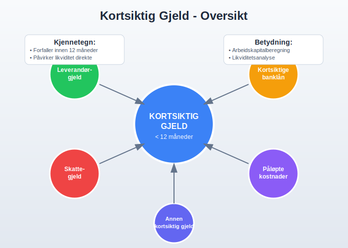
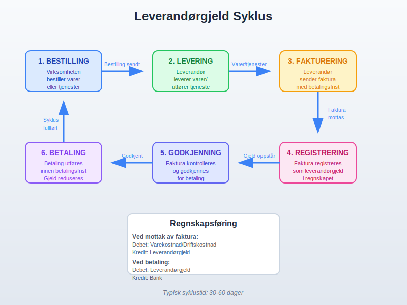
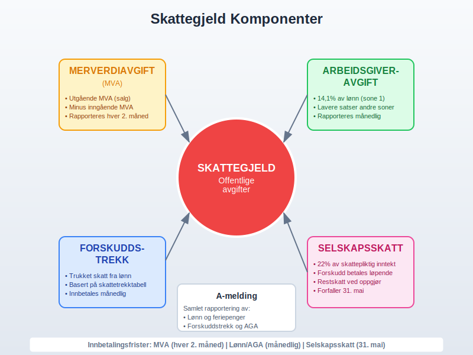
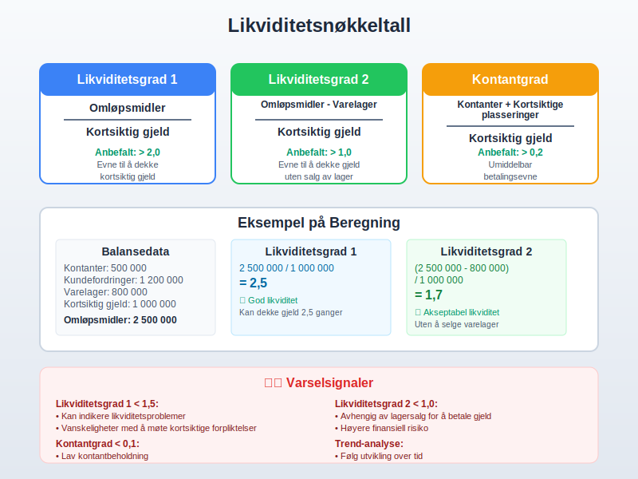
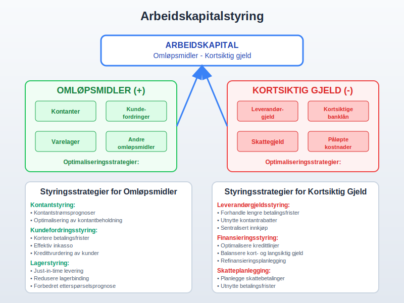
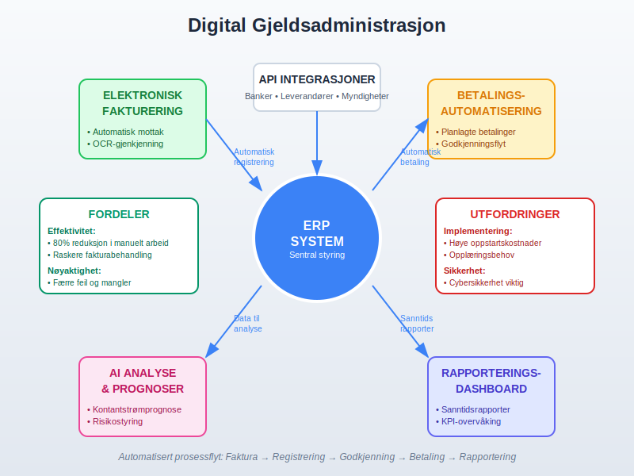

Kortsiktig gjeld er en fundamental komponent i regnskapsføring som representerer virksomhetens forpliktelser som forfaller til betaling innen ett år fra balansedagen. Som en kritisk del av balansen, påvirker kortsiktig gjeld direkte virksomhetens likviditet og arbeidskapital. Denne artikkelen gir en omfattende gjennomgang av kortsiktig gjeld, dens komponenter, regnskapsføring og strategisk betydning.
Høy andel kortsiktig gjeld kan øke risikoen for insolvens. Les mer i Hva er Insolvens?.
Seksjon 1: Definisjon og Grunnleggende Prinsipper
Kortsiktig gjeld defineres som virksomhetens nåværende forpliktelser som forventes å bli gjort opp innen tolv måneder fra balansedagen. Dette skiller seg fra langsiktig gjeld som har en forfallstid på mer enn ett år.

1.1 Klassifiseringskriterier
For at en forpliktelse skal klassifiseres som kortsiktig gjeld, må den oppfylle følgende kriterier:
- Forfallstid: Forpliktelsen forfaller innen 12 måneder fra balansedagen
- Operasjonell syklus: Forpliktelsen er del av virksomhetens normale operasjonelle syklus
- Handelsformål: Forpliktelsen holdes primært for handelsformål
- Ingen utsettelsesrett: Virksomheten har ikke ubetinget rett til å utsette oppgjør
1.2 Betydning for Finansiell Analyse
Kortsiktig gjeld er kritisk for vurdering av:
- Likviditet: Virksomhetens evne til å møte kortsiktige forpliktelser
- Arbeidskapital: Differansen mellom omløpsmidler og kortsiktig gjeld
- Kontantstrømstyring: Planlegging av kontantbehov
- Kredittrisiko: Vurdering av finansiell stabilitet
Seksjon 2: Hovedtyper Kortsiktig Gjeld
2.1 Leverandørgjeld
Leverandørgjeld er den vanligste formen for kortsiktig gjeld og oppstår når virksomheten kjøper varer eller tjenester på kreditt.

Karakteristikker ved Leverandørgjeld:
- Betalingsbetingelser: Vanligvis 30-60 dager betalingsfrist
- Kontantrabatter: Rabatt for tidlig betaling (f.eks. 2/10 netto 30)
- Ingen rentekostnad: Normalt ingen eksplisitt rentekostnad
- Handelskreditt: Fungerer som kortsiktig finansiering
Regnskapsføring av Leverandørgjeld:
| Transaksjon | Debet | Kredit |
|---|---|---|
| Kjøp på kreditt | Varekostnad/Driftskostnad | Leverandørgjeld |
| Kontantrabatt | Leverandørgjeld | Bank + Finansinntekt |
| Betaling av gjeld | Leverandørgjeld | Bank |
| Retur av varer | Leverandørgjeld | Varekostnad |
2.2 Kortsiktige Banklån
Kortsiktige banklån inkluderer ulike former for kortsiktig finansiering fra finansinstitusjoner.
Typer Kortsiktige Banklån:
- Driftskreditt: Fleksibel kredittramme for daglig drift
- Kontokortkreditt: Overtrekk på bankkonto
- Vekselkreditt: Finansiering mot veksler
- Kortsiktige terminlån: Lån med fast løpetid under ett år
- Byggelån: Kortsiktig finansiering av byggeprosjekter
Regnskapsføring av Kortsiktige Banklån:
| Hendelse | Debet | Kredit |
|---|---|---|
| Opptak av lån | Bank | Kortsiktig banklån |
| Påløpte renter | Rentekostnad | Påløpte renter |
| Rentebetaling | Påløpte renter | Bank |
| Nedbetaling | Kortsiktig banklån | Bank |
2.3 Skattegjeld og Offentlige Avgifter
Skatteforpliktelser utgjør en betydelig del av kortsiktig gjeld for de fleste virksomheter.

Hovedtyper Skattegjeld:
- Skyldig merverdiavgift: Innbetalt mva minus fradragsberettiget mva
- Skyldig arbeidsgiveravgift: Avgift på utbetalte lønn
- Forskuddstrekk: Trukket skatt fra ansattes lønn
- Skyldig selskapsskatt: Beregnet skatt på årets resultat
- Naturressursskatt: For virksomheter i utvinningsindustrien
MVA-beregning og Regnskapsføring:
| Periode | Utgående MVA | Inngående MVA | Til betaling |
|---|---|---|---|
| Januar | 125 000 | 87 500 | 37 500 |
| Februar | 150 000 | 95 000 | 55 000 |
| Mars | 135 000 | 78 000 | 57 000 |
| 1. kvartal | 410 000 | 260 500 | 149 500 |
2.4 Påløpte Kostnader
Påløpte kostnader representerer kostnader som er pådratt men ikke betalt på balansedagen.
Vanlige Påløpte Kostnader:
- Påløpte lønn: Opptjent lønn som ikke er utbetalt
- Påløpte feriepenger: Opptjente feriepenger
- Påløpte renter: Renter som er pådratt men ikke betalt
- Påløpte strømkostnader: Forbrukt strøm som ikke er fakturert
- Påløpte revisjonshonorar: Utført revisjonsarbeid som ikke er fakturert
2.5 Kortsiktig Del av Langsiktig Gjeld
Den delen av langsiktig gjeld som forfaller til betaling innen ett år må reklassifiseres som kortsiktig gjeld.
Eksempler på Reklassifisering:
- Avdrag på byggelån: Neste års avdrag på langsiktig byggelån
- Obligasjonsforfall: Obligasjoner som forfaller innen ett år
- Leasingavdrag: Neste års leasingbetalinger
- Pensjonspremier: Forfalt pensjonspremie
Seksjon 3: Regnskapsføring og Måling
3.1 Innregning av Kortsiktig Gjeld
Kortsiktig gjeld skal innregnes når:
- Virksomheten har en nåværende forpliktelse
- Forpliktelsen oppstår fra tidligere hendelser
- Det er sannsynlig at oppgjør krever utstrømning av ressurser
- Beløpet kan måles pålitelig
3.2 Måling av Kortsiktig Gjeld
Førstegangsinnregning:
- Nominell verdi: For de fleste kortsiktige forpliktelser
- Virkelig verdi: Når det er betydelig forskjell fra nominell verdi
- Transaksjonskostnader: Normalt ikke vesentlige for kortsiktig gjeld
Etterfølgende måling:
- Amortisert kost: Hovedregelen for finansielle forpliktelser
- Nominell verdi: For kortsiktige forpliktelser uten vesentlig rentekomponent
3.3 Valutaomregning
For kortsiktig gjeld i utenlandsk valuta:
| Tidspunkt | Omregningskurs | Regnskapsføring |
|---|---|---|
| Opptak | Spotkurs på opptak | Gjeld i NOK |
| Balansedagen | Spotkurs på balansedagen | Kursgevinst/-tap |
| Betaling | Spotkurs ved betaling | Endelig kursgevinst/-tap |
Seksjon 4: Likviditetsanalyse og Nøkkeltall
4.1 Likviditetsnøkkeltall
Kortsiktig gjeld er sentral i beregning av viktige likviditetsnøkkeltall:

Primære Likviditetsnøkkeltall:
| Nøkkeltall | Formel | Tolkning | Anbefalt nivå |
|---|---|---|---|
| Likviditetsgrad 1 | Omløpsmidler / Kortsiktig gjeld | Evne til å dekke kortsiktig gjeld | > 2,0 |
| Likviditetsgrad 2 | (Omløpsmidler - Varelager) / Kortsiktig gjeld | Evne til å dekke gjeld uten salg av lager | > 1,0 |
| Kontantgrad | (Kontanter + Kortsiktige plasseringer) / Kortsiktig gjeld | Umiddelbar betalingsevne | > 0,2 |
4.2 Arbeidskapitalanalyse
Arbeidskapital = Omløpsmidler - Kortsiktig gjeld
Komponenter av Arbeidskapital:
- Positive komponenter: Kontanter, kundefordringer, varelager
- Negative komponenter: Leverandørgjeld, kortsiktige lån, påløpte kostnader
- Netto arbeidskapital: Differansen mellom positive og negative komponenter
4.3 Kontantkonverteringssyklus
Måler tiden fra investering i varelager til inngang av kontanter:
Kontantkonverteringssyklus = Lageromløpstid + Kundefordringomløpstid - Leverandørgjeldperiode
Beregningseksempel:
| Komponent | Dager | Beregning |
|---|---|---|
| Lageromløpstid | 45 dager | (Gjennomsnittlig lager / Varekostnad) × 365 |
| Kundefordringomløpstid | 30 dager | (Gjennomsnittlige kundefordringer / Omsetning) × 365 |
| Leverandørgjeldperiode | 40 dager | (Gjennomsnittlig leverandørgjeld / Varekjøp) × 365 |
| Kontantkonverteringssyklus | 35 dager | 45 + 30 - 40 |
Seksjon 5: Styring av Kortsiktig Gjeld
5.1 Arbeidskapitalstyring
Effektiv styring av kortsiktig gjeld er kritisk for kontantstrømstyring:

Strategier for Arbeidskapitalstyring:
- Optimalisering av betalingsbetingelser: Forhandle lengre betalingsfrister
- Kontantrabattutnyttelse: Utnytte rabatter for tidlig betaling når lønnsomt
- Leverandørforhandlinger: Sikre gunstige betalingsbetingelser
- Kontantstrømsprognoser: Planlegge kontantbehov
5.2 Finansieringsstrategier
Kortsiktige Finansieringsalternativer:
- Handelskreditt: Utnyttelse av leverandørgjeld
- Bankkreditt: Driftskreditt og kontokortkreditt
- Factoring: Salg av kundefordringer
- Kortsiktige lån: Terminlån og vekselkreditt
5.3 Risikostyring
Risikoer knyttet til Kortsiktig Gjeld:
- Likviditetsrisiko: Risiko for ikke å kunne møte forpliktelser
- Refinansieringsrisiko: Risiko ved fornyelse av kredittlinjer
- Renterisiko: Risiko ved endringer i kortsiktige renter
- Operasjonell risiko: Risiko ved feil i gjeldsadministrasjon
Seksjon 6: Bransjeforskjeller og Spesielle Forhold
6.1 Bransjevariasjoner
Kortsiktig gjeld varierer betydelig mellom bransjer:
Detaljhandel:
- Høy leverandørgjeld: Store innkjøp på kreditt
- Sesongvariasjoner: Høyere gjeld før høysesong
- Lav kundefordringer: Hovedsakelig kontantsalg
Produksjonsbedrifter:
- Balansert gjeldsstruktur: Både leverandør- og bankgjeld
- Påløpte lønnskostnader: Betydelige lønnsforpliktelser
- Råvareleverandører: Spesialiserte betalingsbetingelser
Tjenestebedrifter:
- Lav leverandørgjeld: Færre fysiske innkjøp
- Høye lønnskostnader: Store påløpte lønnsforpliktelser
- Forskuddsbetalinger: Mottatte forskudd fra kunder
6.2 Sesongvariasjoner
Mange virksomheter opplever sesongvariasjoner i kortsiktig gjeld:
| Måned | Leverandørgjeld | Skattegjeld | Total Kortsiktig Gjeld |
|---|---|---|---|
| Januar | 2 500 000 | 450 000 | 3 200 000 |
| April | 3 200 000 | 650 000 | 4 100 000 |
| Juli | 2 800 000 | 380 000 | 3 400 000 |
| Oktober | 4 100 000 | 720 000 | 5 200 000 |
Seksjon 7: Rapportering og Noteopplysninger
7.1 Presentasjon i Balansen
Kortsiktig gjeld skal presenteres systematisk i balansen:
Standard Presentasjonsrekkefølge:
- Kortsiktig del av langsiktig gjeld
- Leverandørgjeld
- Skyldig offentlige avgifter
- Kortsiktige banklån
- Annen kortsiktig gjeld
7.2 Noteopplysninger
Viktige noteopplysninger om kortsiktig gjeld:
Obligatoriske Opplysninger:
- Forfallsanalyse: Når gjelden forfaller
- Rentebetingelser: Renter og sikkerhet for banklån
- Valutaeksponering: Gjeld i utenlandsk valuta
- Sikkerhetsstillelse: Pantsettelser og garantier
Eksempel på Forfallsanalyse:
| Forfallsperiode | Beløp (NOK) | Andel (%) |
|---|---|---|
| 0-3 måneder | 2 500 000 | 45% |
| 3-6 måneder | 1 800 000 | 32% |
| 6-12 måneder | 1 300 000 | 23% |
| Total | 5 600 000 | 100% |
Seksjon 8: Digitalisering og Automatisering
8.1 Moderne Gjeldsadministrasjon
Digitale løsninger transformerer håndtering av kortsiktig gjeld:

Digitale Verktøy:
- ERP-systemer: Integrert gjeldsadministrasjon
- Elektronisk fakturering: Automatisert fakturabehandling
- Betalingsautomatisering: Automatiske betalinger basert på godkjenning
- Kontantstrømsprognoser: AI-baserte prognoser
8.2 Automatiserte Prosesser
Leverandørgjeldsprosess:
- Automatisk mottak: Elektroniske fakturaer
- Automatisk matching: Faktura mot bestilling og varemottak
- Automatisk godkjenning: Basert på forhåndsdefinerte regler
- Automatisk betaling: Planlagte betalinger
Seksjon 9: Internkontroll og Compliance
9.1 Internkontrollsystemer
Effektiv internkontroll for kortsiktig gjeld:
Kontrollaktiviteter:
- Segregering av oppgaver: Skille mellom registrering og betaling
- Autorisasjonsnivåer: Definerte godkjenningsgrenser
- Regelmessige avstemminger: Avstemming mot leverandører
- Dokumentasjonskrav: Fullstendig dokumentasjon av transaksjoner
9.2 Compliance og Regulatoriske Krav
Viktige Regulatoriske Aspekter:
- Bokføringsloven: Krav til registrering og dokumentasjon
- Regnskapsloven: Krav til presentasjon og noteopplysninger
- Skatteloven: Korrekt håndtering av skatteforpliktelser
- A-ordningen: Rapportering av lønn og skatt
Konklusjon
Kortsiktig gjeld er en kritisk komponent i virksomhetens finansielle struktur som krever nøye oppmerksomhet og profesjonell håndtering. Fra enkle leverandørforpliktelser til komplekse finansieringsarrangementer, påvirker kortsiktig gjeld direkte virksomhetens likviditet, arbeidskapital og operasjonelle fleksibilitet.
Effektiv håndtering av kortsiktig gjeld innebærer:
- Systematisk klassifisering og regnskapsføring i henhold til gjeldende standarder
- Kontinuerlig overvåking av likviditetsnøkkeltall og kontantstrømmer
- Proaktiv arbeidskapitalstyring for optimal kontantstrømsstyring
- Implementering av digitale løsninger for effektiv administrasjon
- Robust internkontroll for å sikre nøyaktighet og compliance
Ved å forstå kortsiktig gjeld grundig og implementere beste praksis for styring og rapportering, kan virksomheter optimalisere sin likviditetsstyring og sikre finansiell stabilitet. Kortsiktig gjeld er ikke bare en forpliktelse, men også et strategisk verktøy for effektiv arbeidskapitalstyring når det håndteres riktig.
For videre lesning om relaterte emner, se våre artikler om gjeld generelt, arbeidskapital, likviditetsanalyse, og kontantstrømstyring.